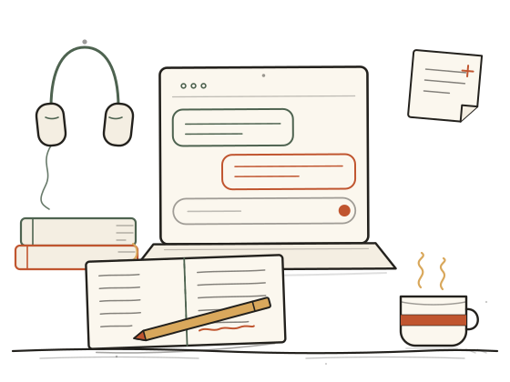
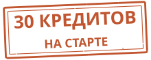
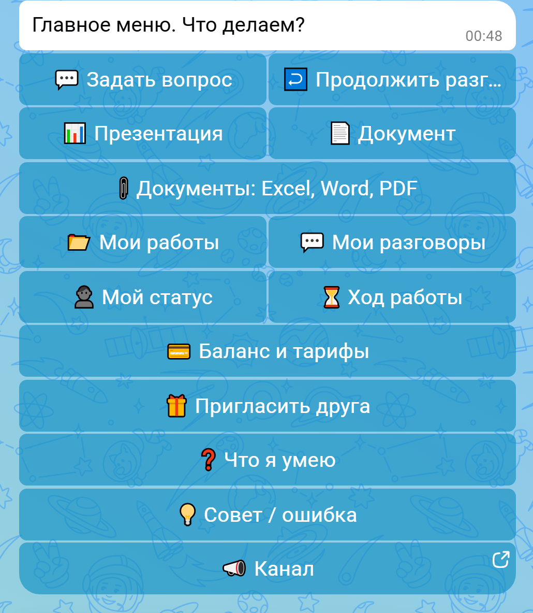

Презентация к защите
Файл .pptx: титул, структура, выводы. 12 слайдов или 15, если нужно. Три готовых стиля и «свой» — по вашему примеру.
20 кредитовБот в мессенджере MAX · колледжи и вузы
СтудПомощник — ИИ-помощник для студентов. Присылаете задание текстом, голосом, фото или файлом — получаете разбор, документ Word или презентацию к защите. Всё в чате MAX, ставить ничего не нужно.
Пишете вопрос как есть — бот сам выбирает глубину ответа. Не понравился разбор, под ним кнопка «Усилить»: кредиты за прошлый ответ возвращаются, списывается только разница.


Задание в чат.
Готовый файл обратно.
Всё считается в кредитах и списывается по факту: видно, сколько стоит каждый шаг, до того как его нажать.
Файл .pptx: титул, структура, выводы. 12 слайдов или 15, если нужно. Три готовых стиля и «свой» — по вашему примеру.
20 кредитовРеферат, эссе, отчёт. Мастер спросит тип, тему и титульные данные. На выходе Times New Roman 14, интервал 1,5.
20 кредитовPDF, DOCX или PPTX до 300 страниц. Ссылается на страницы — «учебник, с. 42». Чего в книге нет, скажет прямо.
от 1 кредитаСнимок методички, контрольной или тетради. Текст распознаётся, задание решается — по вашему учебнику, если он в чате.
2 кредитаГлавные мысли, ключевые определения, 5–10 тезисов и блок «что запомнить к экзамену».
по объёмуПодбирает изображение по теме слайда и проверяет, что на нём. Можно добавить картинку в готовую презентацию.
2 кредитаЗапись до двух минут: речь распознаётся, ответ приходит текстом. Удобно, когда нет времени печатать.
1 кредитВсе презентации и документы в одном месте: файл можно получить заново. Рядом — «Мои разговоры».
бесплатноНовости бота, примеры работ и короткие разборы учебных задач.
Открыть чат, забрать 30 кредитов и прислать первое задание. Приложение ставить не обязательно.
Ссылка max.ru/id560703696513_1_bot откроет чат в MAX — в приложении или в браузере.
На счёт сразу придёт 30 кредитов. Привязывать карту не нужно.
Текст, голосовое до двух минут или фото из методички. Промпт придумывать не надо.
Нужна презентация или документ — ответьте на два-три вопроса мастера и дождитесь файла в чате.
Это презентация к защите (20) или документ Word (20) плюс запас на вопросы. Срок у кредитов не ограничен: не потратили сейчас — потратите к сессии.
Семь пакетов от 10 до 499 ₽. Кредиты складываются и не сгорают.
| Пакет | Цена | Начисляется |
|---|---|---|
| Знакомство | 10 ₽ | 10 кредитов |
| Пробный | 20 ₽ | 21 кредит · бонус 5 % |
| Старт | 50 ₽ | 55 кредитов · бонус 10 % |
| Студентчаще берут | 100 ₽ | 115 кредитов · бонус 15 % |
| Сессия | 199 ₽ | 240 кредитов · бонус 20 % |
| Супер | 299 ₽ | 375 кредитов · бонус 25 % |
| Максимум | 499 ₽ | 650 кредитов · бонус 30 % |
1 ₽ в пакете «Знакомство», 0,77 ₽ в «Максимуме». Кредиты не сгорают и складываются: докупили пакет — остаток сохранился.
Быстрый ответ — 1, «Глубже» — 3, «Максимум» — 8, фото задания — 2, презентация или документ Word — 20. Доработка готовой презентации — 30, 45 или 65 по объёму правок.
Оплата — банковской картой или через СБП на защищённой платёжной странице. Фискальный чек приходит на e-mail, указанный при оплате. Кредиты зачисляются автоматически, ждать письма не нужно.
Как это выглядит на практике: что пишет студент и что приходит в ответ.
«Завтра защита курсовой, презентации нет. Тема — цифровые двойники в логистике, 12 слайдов, стиль строгий, без анимации».
Уточняет объём и стиль, собирает структуру, подбирает изображения и верстает файл .pptx.
Готовую презентацию в чате — обычно до минуты. Не понравился стиль: «Изменить стиль» или «Другой вариант».
«Реферат по истории экономики, 15 страниц, тема — реформы Столыпина. Титульный лист мой: вуз, факультет, 2 курс».
Мастер документа спрашивает тип, тему, пожелания к структуре и титульные данные, затем пишет текст и оформление.
Файл .docx с титульным листом, Times New Roman 14, интервалом 1,5 и нумерацией страниц. Правки — тем же сообщением в чат.
«Вот фото контрольной, учебник прикрепил — реши по нему». Фото задания и PDF методички в одном чате.
Распознаёт текст с фото, находит тему в загруженном учебнике и отбирает нужные страницы.
Решение со ссылками на страницы — «учебник, с. 42». Стоимость: 2 кредита за фото плюс объём учебника.
Вопрос, ответ, файл и кнопки следующего шага — в одном диалоге. Имена, аватары и чужие переписки не показаны.

Один чат: вопрос, ответ, файл. Ставить приложение не обязательно — работает и в браузере.
Презентация приходит документом .pptx, текст — .docx: открывается в PowerPoint, «Р7-Офис», Google Slides и Word.
Под ответом — что делать дальше: другой вариант, стиль, картинка к слайду, «Мои работы».
Пока бот работает, в чате висит «⏳ Работаю…» со счётчиком секунд — это же сообщение станет ответом или файлом.
Коротко о цене, оплате, возврате и том, какие файлы принимает бот.
От 1 до 30 кредитов. Быстрый ответ — 1, «Глубже» — 3, «Максимум» — 8, фото задания — 2, презентация или документ Word — 20. Кредит стоит от 0,77 ₽ до 1 ₽ в зависимости от пакета. Первые 30 кредитов бот даёт бесплатно.
Картой или через СБП на защищённой странице платёжного провайдера. Фискальный чек приходит на e-mail, который вы указали при оплате. Кредиты зачисляются автоматически; если деньги списались, а кредитов нет — напишите на windlnminemind@gmail.com, пополним вручную.
Да, за неиспользованные кредиты — в любое время. Заявка отправляется формой на странице «Возврат». Кредиты, уже потраченные на ответы, разборы, презентации и документы, возврату не подлежат: услуга по ним оказана.
Word, PDF, PowerPoint, Excel и CSV — как учебник или как материал для разбора. Учебник — до 300 страниц. Фото задания и скриншоты — JPG и PNG. Для «своего стиля» презентации — пример оформления в .pptx или .pdf. Голосовые сообщения — до двух минут.
Быстрый ответ — несколько секунд. «Глубже» и «Максимум» — до минуты. Документ и презентация собираются обычно до минуты; если бот подбирает картинки, дольше. Пока идёт работа, в чате виден счётчик — бот не завис.
На серверах сервиса. Все презентации и документы доступны в разделе «Мои работы» — файл можно получить заново в любой момент. Удалить данные или запросить их — письмом на windlnminemind@gmail.com; обращение рассматривается в течение 10 рабочих дней. Подробности — в политике обработки персональных данных.
Исполнитель — индивидуальный предприниматель. Услуги дистанционные, через бота в MAX.
Всё, что определяет отношения: оферта, обработка данных и возврат.
Сервис не является официальным сервисом учебного заведения. Бот может ошибаться — проверяйте учебные материалы.
Хватит на презентацию к защите или документ Word, плюс запас на вопросы. Срок у кредитов не ограничен.